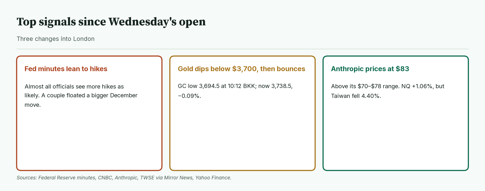
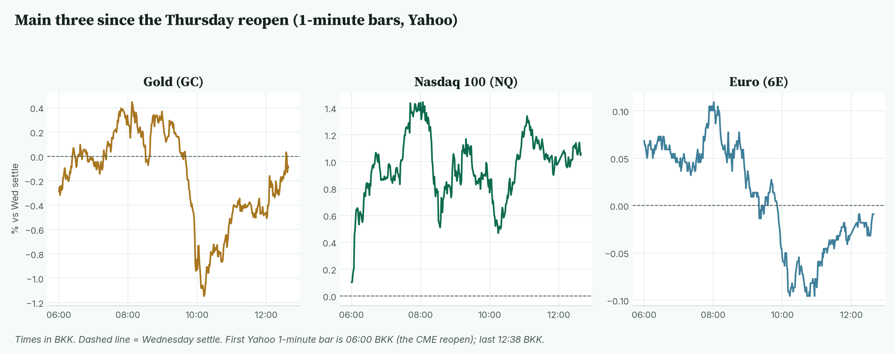
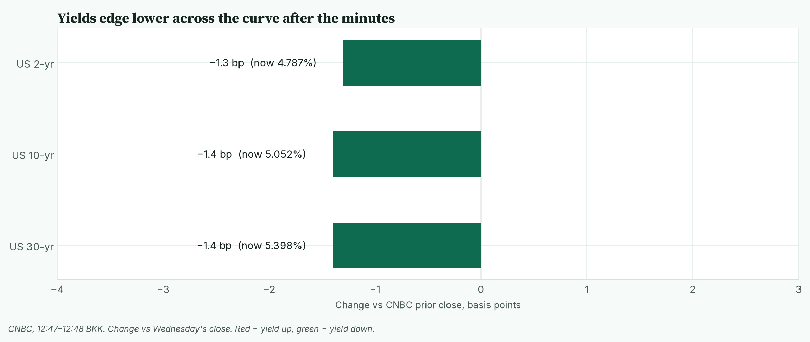
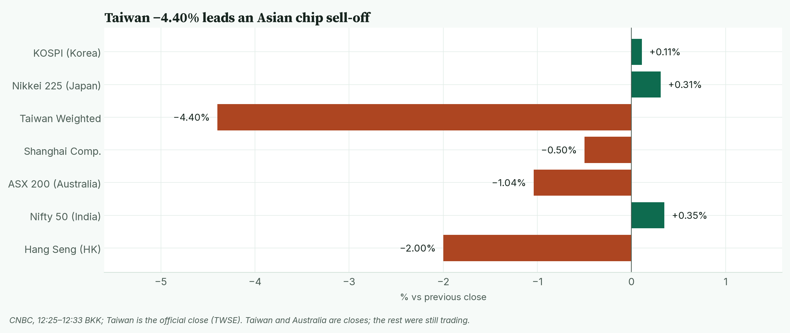
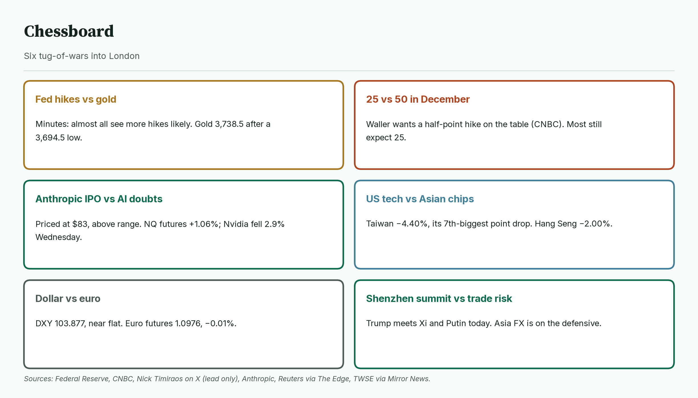
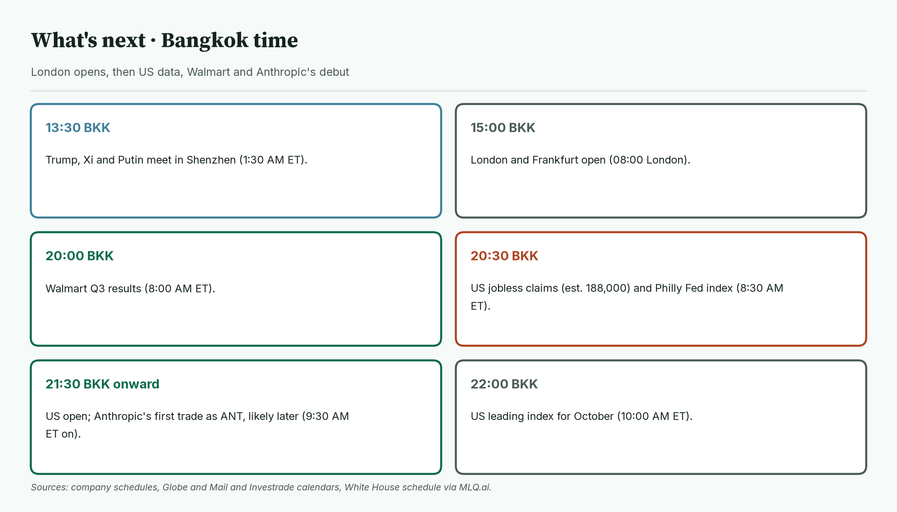
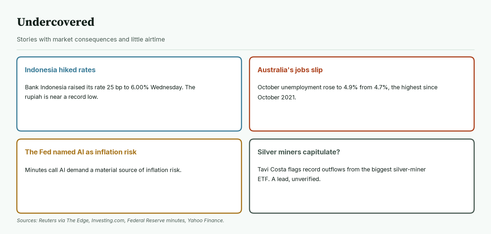
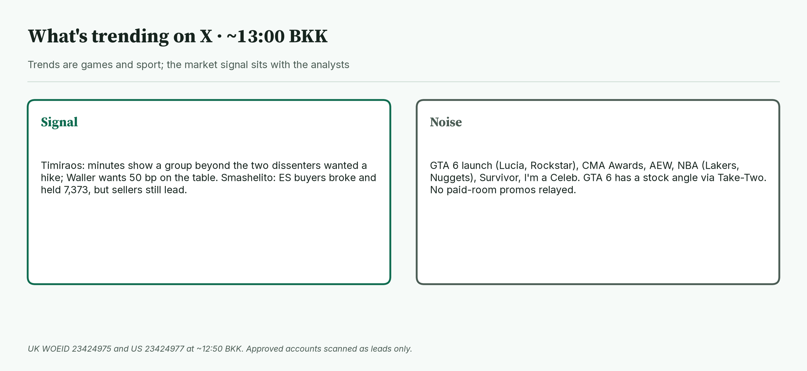

April · Market Intel, pre-London · Thu Nov 19, 2026 · ~13:00 BKK / ~06:00 London
Headline: The Fed minutes leaned hard toward more hikes, and gold futures briefly broke below $3,700 before bouncing to 3,738.5 (−0.09%). Nasdaq futures are 27,475.25 (+1.06%) after Anthropic priced its IPO at $83. Euro futures are flat at 1.0976 (−0.01%). US jobless claims at 20:30 BKK and Anthropic's first trade after 21:30 BKK decide the session.
So what: the Fed is set to hike again in December, which keeps the dollar firm and gold under pressure. Tech futures are leaning on the Anthropic debut, while Asian chip stocks sold off hard.
 Caption: Futures at 12:36–12:38 BKK versus Wednesday's settle. Nasdaq leads; gold is flat after a deep dip. The VIX tile is Wednesday's close.
Caption: Futures at 12:36–12:38 BKK versus Wednesday's settle. Nasdaq leads; gold is flat after a deep dip. The VIX tile is Wednesday's close.
1) Top signals Three changes since Wednesday's open. The Fed sounded hawkish, gold briefly lost $3,700, and Anthropic priced above range. |
 Caption: Three changes since Wednesday's open. The Fed sounded hawkish, gold briefly lost $3,700, and Anthropic priced above range.
Caption: Three changes since Wednesday's open. The Fed sounded hawkish, gold briefly lost $3,700, and Anthropic priced above range.
- The Fed minutes lean to hikes. Almost all officials said more rate increases "would likely be appropriate." A couple floated a bigger move in December if inflation data were unfavorable (Federal Reserve).
- Gold futures dipped to 3,694.5 at 10:12 BKK, then bounced to 3,738.5 (Yahoo, CNBC).
- Anthropic priced its IPO at $83 a share, above its $70 to $78 range, selling 980 million shares (Anthropic).
2) Main instruments The three main contracts since the Thursday reopen, as a % move from Wednesday's settle. Gold dropped sharply mid-morning, then recovered. Nasdaq held most of its early gain. |
 Caption: The three main contracts since the Thursday reopen, as a % move from Wednesday's settle. Gold dropped sharply mid-morning, then recovered. Nasdaq held most of its early gain.
(Quotes are Yahoo Finance futures at 12:36–12:38 BKK (05:36–05:38 London), matching CNBC. Session highs and lows use Yahoo 1-minute bars from the 06:00 BKK CME reopen (18:00 New York Wednesday). The first bar is 06:00 BKK.)
Caption: The three main contracts since the Thursday reopen, as a % move from Wednesday's settle. Gold dropped sharply mid-morning, then recovered. Nasdaq held most of its early gain.
(Quotes are Yahoo Finance futures at 12:36–12:38 BKK (05:36–05:38 London), matching CNBC. Session highs and lows use Yahoo 1-minute bars from the 06:00 BKK CME reopen (18:00 New York Wednesday). The first bar is 06:00 BKK.)
- Gold futures (GC, Dec): 3,738.5, −0.09%, at 12:38 BKK. Driver: the hawkish minutes and a firm dollar pushed spot gold below $3,700 for the first time since September 2025 (CNR via 10jqka). Wednesday's settle was 3,741.9. Today's range is 3,694.5 (10:12 BKK) to 3,759.5 (08:07 BKK). It is mid-range after the bounce.
- Nasdaq 100 futures (NQ, Dec): 27,475.25, +1.06%, at 12:38 BKK. Driver: Anthropic's above-range IPO price lifted tech futures early (Investing.com). Wednesday's settle was 27,186.75. Today's range is 27,169.00 (06:00 BKK) to 27,589.00 (08:04 BKK).
- Euro futures (6E, Dec): 1.0976, −0.01%, at 12:38 BKK. Driver: the dollar is holding near a 19-month high on Fed hike bets (Reuters via CNBC). Wednesday's settle was 1.0977. Today's range is 1.0966 (10:16 BKK) to 1.0989 (07:54 BKK). It is a tight range.
- Takeaway: rate fears still own gold and the euro, while tech trades on the Anthropic story.
Context. The dollar index (DXY, the dollar against six major currencies) is 103.877, +0.01% (CNBC, 12:48 BKK). The 10-year US yield (what the US government pays to borrow for 10 years) is 5.052%, down 1.4 basis points (CNBC, 12:47 BKK; a basis point is 0.01 percentage point). The VIX (the "fear gauge" built from S&P 500 option prices) closed Wednesday at 24.56, −3.53% (CNBC). US oil (CL, December) is 83.18, −0.10% (Yahoo, 12:36 BKK, matching CNBC). S&P 500 futures (ES) are 7,386.25, +0.62% (Yahoo, 12:38 BKK). Bitcoin is $63,257, +1.21% versus CNBC's previous close (CNBC/Coin Metrics, 12:48 BKK).
3) Overnight US session
- The S&P 500 fell a fifth straight day, its longest losing streak since June (AP). It closed at 7,323.64, down 0.23%. The Dow lost 561.25 points to 50,198.17. The Nasdaq Composite rose 0.42% to 24,429.89 (Reuters via The Business Times).
- Nvidia closed 2.9% lower despite its beat, and is down about 26% this month (Investing.com).
- The minutes showed a 10–2 vote to hold rates at 3.75% to 4.00%. Cook and Hammack dissented for a hike. Officials called AI demand "a material source of inflation risk" (Federal Reserve, CNBC).
- Waller said a half-point December hike should be considered (CNBC interview, via Nick Timiraos).
- Retailers rallied: Target +4%, TJX +8% (Reuters via The Business Times).
- Takeaway: the Fed, not earnings, is setting the tone. Markets price a near-certain 25 bp December hike (CME FedWatch via Reuters).
4) Rates, FX and oil Yields slipped about 1.3 to 1.4 basis points across the curve in Asia. The hawkish minutes were largely priced in. |
 Caption: Yields slipped about 1.3 to 1.4 basis points across the curve in Asia. The hawkish minutes were largely priced in.
Caption: Yields slipped about 1.3 to 1.4 basis points across the curve in Asia. The hawkish minutes were largely priced in.
- CNBC, 12:47 to 12:48 BKK: 2-year 4.787% (−1.3 bp), 10-year 5.052% (−1.4 bp), 30-year 5.398% (−1.4 bp).
- Dollar. DXY is 103.877. EUR/USD is 1.0966 (CNBC, 12:48 BKK).
- Yen. USD/JPY is 159.51 (CNBC, 12:48 BKK), still just under 160.
- Oil. WTI (December) 83.18 and Brent (January) 92.19, +0.26% (CNBC, 12:36–12:38 BKK).
- Takeaway: the dollar is firm and yields are high. That remains the weight on gold.
5) Why it matters Taiwan led an Asian chip sell-off. Japan, Korea and India held up. Taiwan and Australia are closes; the rest are CNBC prints from 12:25 to 12:33 BKK. |
 Caption: Taiwan led an Asian chip sell-off. Japan, Korea and India held up. Taiwan and Australia are closes; the rest are CNBC prints from 12:25 to 12:33 BKK.
Caption: Taiwan led an Asian chip sell-off. Japan, Korea and India held up. Taiwan and Australia are closes; the rest are CNBC prints from 12:25 to 12:33 BKK.
- Taiwan closed down 4.40% at 38,426.89, its seventh-biggest point drop on record (TWSE via Mirror News, Yahoo Taiwan).
- Hong Kong fell: Hang Seng −2.00%. ASX 200 −1.04%, Shanghai −0.50% (CNBC).
- Japan, Korea and India held up: Nikkei +0.31%, KOSPI +0.11%, Nifty +0.35% (CNBC).
- Europe fell Wednesday: Euro Stoxx 50 −0.93%, DAX −1.19%, FTSE 100 −1.30% (Yahoo Finance).
- Mentor: a giant IPO can pull money out of other stocks. Analysts say some investors sold Asian chip shares to raise cash for Anthropic (Reuters via The Edge). That is why US tech futures rose while Taiwan fell.
- Takeaway: London opens with Asian tech under stress and the dollar firm.
6) Chessboard Six tug-of-wars into London. The Fed and the AI trade move the main three fastest. |
 Caption: Six tug-of-wars into London. The Fed and the AI trade move the main three fastest.
Caption: Six tug-of-wars into London. The Fed and the AI trade move the main three fastest.
- Fed hikes vs gold. Almost all officials see more hikes as likely. Gold is 3,738.5 after a 3,694.5 low.
- 25 vs 50 in December. Waller wants a half-point hike on the table (CNBC). Markets still price 25.
- Anthropic IPO vs AI doubts. Priced at $83, above range. NQ futures +1.06%, yet Nvidia fell 2.9% Wednesday.
- US tech vs Asian chips. Taiwan −4.40%, Hang Seng −2.00%.
- Dollar vs euro. DXY 103.877, near flat. Euro futures 1.0976.
- Shenzhen summit vs trade risk. Trump meets Xi and Putin today. MUFG says Asia FX is "on a defensive footing" (Reuters via The Edge).
- Takeaway: the board still leans hawkish. The Anthropic debut is the wild card for tech.
7) Leading indicators (BKK times, ET in brackets) London opens into the Shenzhen summit. US data, Walmart and Anthropic's debut follow. |
 Caption: London opens into the Shenzhen summit. US data, Walmart and Anthropic's debut follow.
Caption: London opens into the Shenzhen summit. US data, Walmart and Anthropic's debut follow.
- 13:30 (1:30 AM ET): Trump, Xi and Putin meet in Shenzhen (White House schedule via MLQ.ai).
- 15:00: London and Frankfurt open.
- 20:00 (8:00 AM ET): Walmart third-quarter results (Walmart).
- 20:30 (8:30 AM ET): US jobless claims, estimate 188,000 (Globe and Mail calendar), and the Philly Fed factory index. This is the data decider.
- 21:30 (9:30 AM ET): US stocks open. Anthropic's first trade as ANT is likely later in the morning US time (Alpaca via MLQ.ai). This is the tech decider.
- 22:00 (10:00 AM ET): US leading index for October.
- Takeaway: low jobless claims would firm the hike case and press gold again.
8) Scenarios and levels
- Hawkish (low claims, firm dollar). Watch GC 3,694.5, NQ 27,169.00 and 6E 1.0966 for breaks lower.
- Steady (the base case). Ranges likely hold. GC 3,694.5 to 3,759.5, NQ 27,169.00 to 27,589.00, 6E 1.0966 to 1.0989.
- Risk-on (strong Anthropic debut, softer data). NQ could test 27,589.00; gold and the euro could recover toward 3,759.5 and 1.0989.
- These are possible paths, not forecasts.
9) Undercovered Four stories with little airtime. They touch Asian rates, Australian jobs, AI inflation and silver. |
 Caption: Four stories with little airtime. They touch Asian rates, Australian jobs, AI inflation and silver.
Caption: Four stories with little airtime. They touch Asian rates, Australian jobs, AI inflation and silver.
- Bank Indonesia surprised with a hike of 25 bp to 6.00%. The rupiah is still near a record low (Reuters via The Edge).
- Australia's jobless rate rose to 4.9% in October from 4.7%, the highest since October 2021 (Investing.com).
- The Fed now treats AI as an inflation risk. The minutes call AI demand "a material source of inflation risk" (Federal Reserve, CNBC).
- Silver miners may be capitulating. Tavi Costa flags record outflows from the biggest silver-miner ETF (a lead, not verified).
- Takeaway: rate pressure is spreading beyond the US, and the Fed has a new reason to stay tight.
10) What's trending on X (~13:00 BKK) Trends are games and sport. The market signal sits with the analysts. |
 Caption: Trends are games and sport. The market signal sits with the analysts.
Caption: Trends are games and sport. The market signal sits with the analysts.
- US: GTA 6, #CMAawards, Lakers, Jokic.
- UK: GTA 6, #ImACeleb, Bond, Burnham.
- Signal: GTA 6 launches today. Take-Two rose 6.2% Wednesday ahead of it (Reuters via The Business Times).
- Approved accounts: Timiraos says the minutes show a group beyond the two dissenters thought a hike was warranted, and highlighted Waller's case for 50 bp. Smashelito says ES buyers broke and held 7,373, but sellers still lead. vwaptrader1 posted live-stream links only. Tavi Costa posted on silver miners (above). No paid-room promos relayed.
- Noise: CMA Awards, AEW, NBA, Survivor, I'm a Celeb.
Bottom line: the Fed is tightening the screws, and gold feels it first. For Jim: Nasdaq at 27,475.25 sits in the upper half of 27,169.00 to 27,589.00. Gold at 3,738.5 sits mid-range, 3,694.5 to 3,759.5. The euro at 1.0976 sits mid-range, 1.0966 to 1.0989. Interpretive note: jobless claims at 20:30 BKK are the first test; Anthropic's debut is the bigger one for tech. 🔮 Interpretive, not data: the 19th reduces to 1, the number of first steps. A debut day fits the tag. Symbol, not signal.
Confidence: Futures levels: high (Yahoo, matching CNBC). Session ranges: Yahoo 1-minute bars from the 06:00 BKK reopen. Yields, DXY, VIX, yen, Bitcoin, Brent and Asia: CNBC, time-stamped. Taiwan close: TWSE via Mirror News. Europe closes: Yahoo Finance. US closes: Reuters via The Business Times and AP. Fed minutes: Federal Reserve. IPO: Anthropic. Calendar times: company and press calendars, not all primary. Australia jobs: Investing.com, not checked against the ABS. X posts: leads only. Removed: a US-Iran tension claim (not confirmed by a primary source). Backup source: WTI uses Yahoo's December contract (CLZ26), because Yahoo's front-month feed has rolled to January.
Charts: /workspace/april-charts/2026-11-19/pre-london-{scoreboard,signals,main3,rates,asia,chess,leading,under,xsplit}.png |